SwathPlan user guide
How to plan a survey with SwathPlan, from the first click to the files you send to the vessel. Every section of the survey planner and the infill planner is covered, with screenshots. The science behind the numbers, with its original references, is on the Science & references page.
This guide is in English for now. Translations will follow.
1 What SwathPlan is
SwathPlan is a set of free survey planning tools that run in your web browser:
- Survey planner: lays out survey lines for multibeam, single-beam, geophysical or drone surveys, over an area or along a cable or pipeline route. It designs the vessel turns, estimates time, distance and cost, checks the plan against IHO S-44, and exports the lines for acquisition software, CAD, GIS and drone apps.
- Infill planner: reads what you have already surveyed (tracks, a processed grid or a side-scan mosaic), finds the gaps and plans the infill lines.
Your data never leave your device: there is no account and no server. The planners work offline once they have been opened or installed. Only the online extras (map tiles, place search, global bathymetry downloads, the OpenStreetMap coastline) need internet.
2 Getting started
2.1 Opening SwathPlan
The home page lists the tools. Each tool has two buttons:
- Open runs it from the website.
- Download offline copy saves the tool as a single HTML file. Open it in any browser, even without internet. Some extras need the website: the detailed 1:10m coastline and the links between the pages.
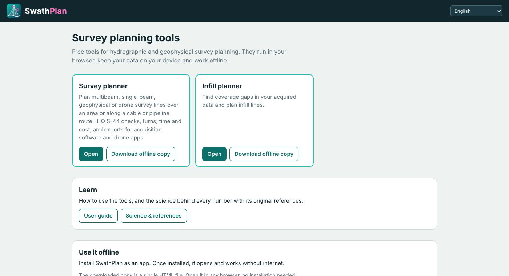
Install it as an app (recommended for field use): on the home page press Install app (Chrome, Edge and Android). On an iPhone or iPad, open the page in Safari, tap Share, then Add to Home Screen. The installed app opens without internet and keeps itself up to date: when a new version is available, a banner offers to reload.
2.2 The screen
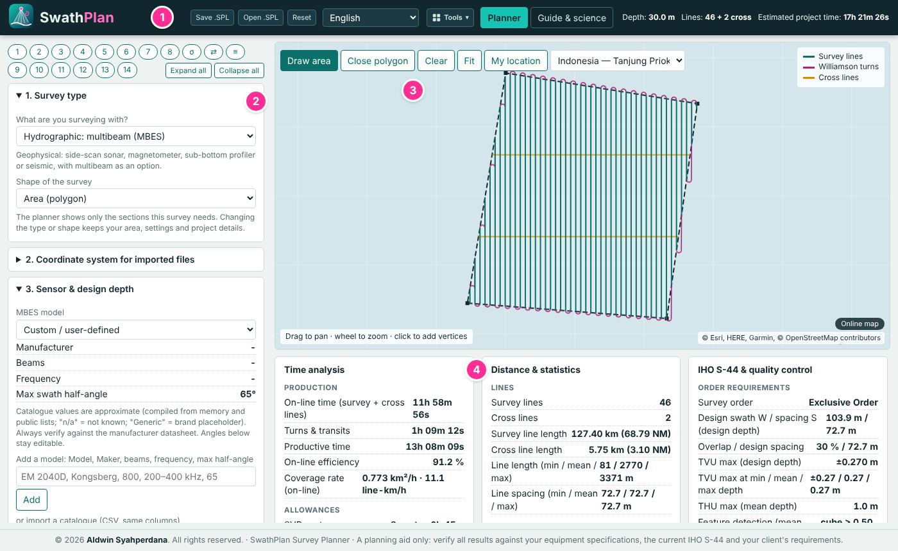
- Header: project files, language, the tools menu, and a live summary (design depth, number of lines, estimated project time).
- Sidebar: the settings, grouped in numbered sections that fold open and closed. The round buttons at the top jump to a section, and Expand all and Collapse all open or close every section. The planner shows only the sections your survey type needs, so the section numbers change with the survey type. This guide therefore refers to sections by name.
- Map: drag to pan, use the mouse wheel (or pinch on a touch screen) to zoom. The coordinates under the pointer are shown in the corner.
- Results: time analysis, distances and statistics, IHO S-44 quality control, and the plan checks, which update as you change anything.
2.3 The header
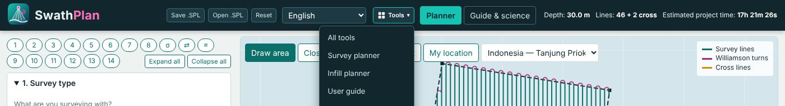
- SwathPlan logo: back to the home page.
- Save .SPL / Open .SPL: save the whole project (area or route, all settings and the coastline you loaded) to a file, or open one. See section 11.
- Reset: forgets the saved settings and restarts with the defaults. Save an .SPL first if you may want the project back.
- Language: 22 languages. The choice is remembered and shared by all SwathPlan pages.
- Tools: the other SwathPlan pages, including this guide.
- Planner / Guide & science: switches between the planner and links to this guide and the science page.
2.4 Autosave and sharing between the planners
Everything you do is saved in the browser as you go: close the page and it reopens where you left it. The coastline and downloaded map tiles are kept too. Saving is per browser and per device, so use .SPL files to move a project to another computer or to keep versions.
With Share project details between planners ticked (in Project & operations), the project name, client, vessel, sensor, IHO order, speed and coordinate system follow you between the survey planner and the infill planner.
3 Your first plan in ten steps
- Choose the survey type and shape in Survey type: what you survey with (multibeam, single-beam, geophysical, drone) and whether it is an area or a corridor along a route.
- Define the area. Click Draw area and click the corners on the map, then double-click or press Close polygon. You can also pick a port from the presets list on the map, or import a boundary file in Survey boundary import. For a corridor, draw or import the route instead.
- Set the coordinate system in Coordinate system for imported files, if you import files that carry no coordinate system (DXF, WKT, text, XYZ).
- Get the depth. Type a design depth, or load your own soundings (Bathymetry from XYZ file), or fetch free global bathymetry (Global bathymetry). Then press Apply shallowest, Apply 5th percentile or Apply mean.
- Set up the sensor: the multibeam model and swath angles, the single-beam transducer, the geophysical sensors or the drone camera.
- Set the overlap or spacing, and tick Adaptive line spacing if you loaded depth data and want wider lines in deeper water.
- Choose the line direction in Line direction. Auto optimal finds the azimuth with the fewest lines.
- Enter the vessel: turning radius in Williamson turn, speeds and IHO order in IHO S-44 & speed.
- Fill in Project & operations: dates, working hours, weather allowance, SVP casts, calibration, mobilisation and the day rate.
- Check and export. Read the results and fix the ⚠ plan checks, then export the lines (section Export) and make the map sheet and the PDF report.
4 Survey type and shape
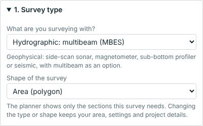
| Survey type | Line spacing comes from | Sections it shows |
|---|---|---|
| Hydrographic: multibeam (MBES) | Swath width at the design depth and the overlap | Sensor & design depth, Swath & overlap, Williamson turn, IHO S-44 & speed, Uncertainty budget |
| Hydrographic: single-beam (SBES) | The spacing you enter, checked against S-44 | Single-beam echosounder & line spacing |
| Geophysical | The sensor that needs the closest lines (side-scan, magnetometer, sub-bottom, UHR seismic, optional multibeam) | Geophysical sensors & line spacing |
| Aerial: drone (camera or LiDAR) | Camera footprint or LiDAR swath, and side overlap | Drone payload & flight (vessel sections hidden) |
Shape: Area (polygon) lays out straight parallel lines across a closed boundary. Corridor along a route lays out lines that follow a route centreline at fixed offsets, with KP (kilometre point) numbering (section 7).
Changing the type or the shape keeps your area, route, settings and project details.
5 Defining the survey area
5.1 Drawing on the map
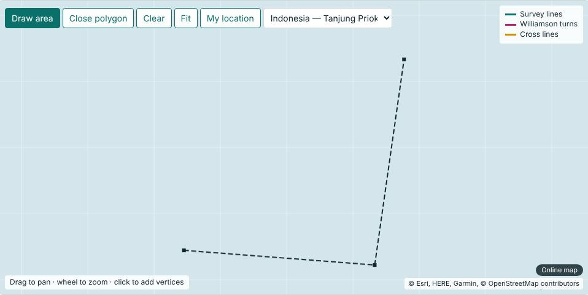
- Draw area starts a new boundary; click the corners in order.
- Close polygon (or a double-click) finishes it and the lines appear.
- Clear removes the boundary. Fit zooms to the area. My location centres the map on your position (the browser asks for permission).
- The presets list on the map holds major ports, grouped by continent. Choosing one draws a ready-made area there, which is handy for trying the planner.
- Map background & search: type a place name, a port or
lat, lonin Survey location to move the map (name search needs internet).
5.2 Importing a boundary
Survey boundary import reads SHP (with its .prj, or a ZIP), DXF, KML, KMZ, GPX, GeoJSON, WKT and CSV/TXT vertex lists, or text pasted into the box. If a file holds several shapes, the largest closed one becomes the boundary.
- KML, KMZ, GPX and GeoJSON are always WGS 84 longitude/latitude.
- SHP uses its .prj file when it is there.
- DXF, WKT and text lists carry no coordinate system: they use the one set in Coordinate system for imported files.
- DWG cannot be read in a browser: save it as DXF first (AutoCAD, BricsCAD, ODA File Converter or LibreDWG).
5.3 Coordinate system for imported files
Choose Geographic lon/lat, a UTM zone (WGS 84 or other datums), Custom (Transverse Mercator) with your own parameters and a 3-parameter datum shift, or an EPSG code. EPSG definitions are looked up online (epsg.io or spatialreference.org) and then kept in the browser, so codes you have used once work offline. For fully offline EPSG work, load a definitions file and proj4.js in Offline helpers. Datum grid files (NTv2 and similar) are not supported. X / Y order handles files written northing first or latitude first.
6 Survey types in detail
6.1 Multibeam: sensor, swath and overlap
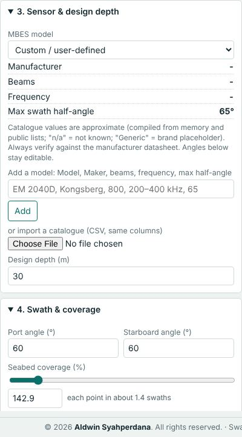
- MBES model: a catalogue of common multibeam systems with beams, frequency and maximum swath half-angle. Current models from Kongsberg, Teledyne RESON, R2Sonic and NORBIT have been checked against the maker's datasheet, and the line under the values names it; the others say they are not yet checked and are approximate. Either way, check your own system's datasheet. Add your own models, or import a catalogue as CSV with the same columns.
- Design depth: the depth the spacing is designed for. Use the shallowest depth for full coverage everywhere; the 5th percentile is a common compromise.
- Port and starboard angle: the swath half-angles you will actually log. They set the swath width W = depth × (tan port + tan starboard).
- Lateral overlap: how much neighbouring swaths overlap, typically 20–30 %. The spacing is S = W × (1 − overlap).
- Adaptive line spacing: with depth data loaded, each line is placed as far from the previous one as the local depth allows while keeping the overlap along its whole length, so lines are wider apart in deeper water.
- Max line spacing and Max swath width cap the result (0 = no cap).
6.2 Single-beam
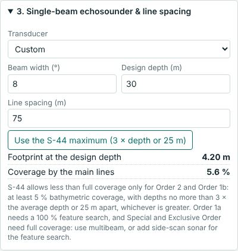
Choose a typical transducer or enter its beam width. The footprint on the seabed (about 2 × depth × tan(beam width / 2)) is shown, together with the coverage the main lines give. You set the line spacing yourself; Use the S-44 maximum sets it to 3 × depth or 25 m, whichever is greater. The plan checks report whether the spacing and the bathymetric coverage meet S-44. Single-beam can only meet Orders 2 and 1b. Order 1a needs a 100 % feature search (add side-scan), and Special and Exclusive Order need full coverage (use multibeam).
6.3 Geophysical
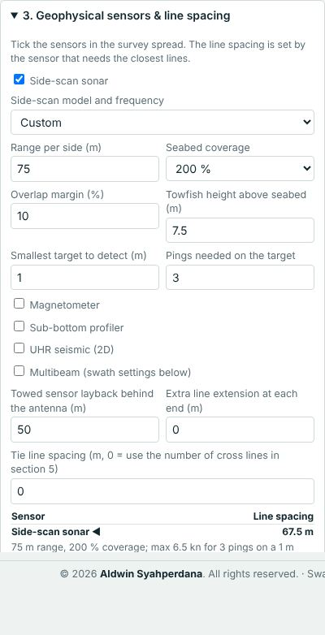
Tick the sensors in the spread. Each proposes a spacing and the closest one is used:
- Side-scan sonar: pick a model and frequency or Custom. The list covers survey towfish and AUV sonars (EdgeTech 4125, 4125i, 4200, 4205, 2205; Klein 3900, 4900, System 4000, 5000 V2, D3500TF, 4K-SVY, HydroScan, UUV 3500, MA-X VIEW 600, MANTIS UUV; Kraken KATFISH; Marine Sonic Sea Scan HDS; Tritech SeaKing and StarFish; Imagenex YellowFin, SportScan and 878; DeepVision; JW Fishers; C-MAX CM2; Cerulean Omniscan 450 SS; Hi-Target / SatLab HydroScan; ZHD SS3060 and SS4090; HMS-624) and the side imaging of fishfinders (Humminbird, Garmin, Lowrance / Simrad, Raymarine). For fishfinders the range is half the published side-to-side range, in good conditions. Choosing a model sets the range per side to the longest that frequency reaches, and the section warns if you set a longer range. Then set the seabed coverage (100, 150 or 200 %), an overlap margin and the towfish height. The smallest target and pings needed give the highest speed at which the target is still hit by enough pings.
- Magnetometer: from the sensor height and the distance at which your target can be detected, the spacing that leaves no part of the seabed out of reach. The sample rate gives the distance between samples at survey speed.
- Sub-bottom profiler and UHR seismic: you enter the grid spacing. For seismic, the lines are extended by half the streamer length at each end for full fold.
- Multibeam (optional): the multibeam spacing from the sections below joins the comparison.
- Layback, extra line extension and tie line spacing complete the line plan.
6.4 Drone (camera or LiDAR)
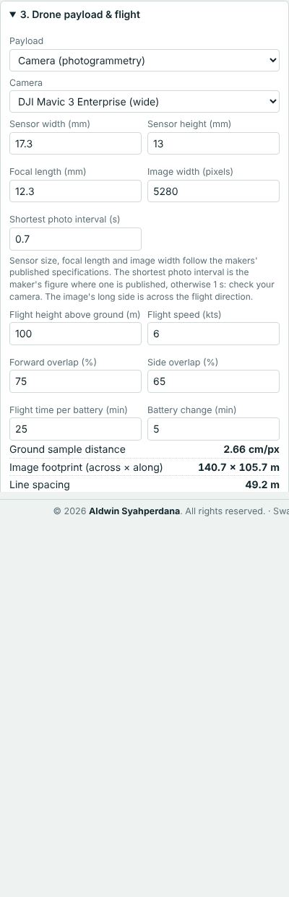
First choose the payload: Camera (photogrammetry) or LiDAR.
Camera. Pick a camera: DJI (Mavic 3 Enterprise, Mavic 3M, Matrice 3D, Matrice 4E, Matrice 4T, Phantom 4 RTK, the Zenmuse L2's RGB camera, Zenmuse P1 with 24, 35 or 50 mm lenses), Autel EVO II Pro RTK V3, senseFly S.O.D.A. and Aeria X for the eBee X, the Sony RX1R II, a6100 and ILX-LR1 used on Wingtra and Quantum Systems drones, Parrot ANAFI Ai, Skydio X10, or the Phase One iXM-100 and P5. You can also enter your own sensor size, focal length, image width and shortest photo interval. Then set the flight height above ground, the forward and side overlap, the speed (in the same section), the flight time per battery and the time to change a battery. The section shows the ground sample distance, the image footprint, the line spacing, the photo distance and interval, and the number of photos, minutes and batteries. The plan checks warn above 120 m (the limit in many countries) and when photos would come faster than the camera can take them.
LiDAR. Pick DJI Zenmuse L2, L1 or L3, Livox Avia, YellowScan Mapper+ or Surveyor Ultra, CHCNAV AlphaAir 450, YellowScan Voyager, Quantum Systems Qube 240 and 640, Wingtra LIDAR, ROCK R3 Pro V2, GreenValley LiAir, RIEGL miniVUX-3UAV and VUX-120²³ or Phoenix RANGER-U120, or enter your own: the field of view across the flight direction, the point rate (points per second, single return) and the detection range on dark ground (10 % reflectivity). For the L3 and the RIEGL scanners, enter the point rate that matches the pulse rate you fly. For 360° scanners (Hesai XT32 based units, Surveyor Ultra) the preset counts only the points within the downward sector. Set the side overlap (50 % by default) and, if your specification asks for one, a target point density. The section shows the swath (2 × height × tan(half the field of view)), the line spacing, the average point density from one pass and with the overlap, and the flight time and batteries. The plan checks warn when the height, or the slant range at the swath edge, is beyond the detection range on dark ground. When the density is below the target, they give the highest speed that meets it. The density is an average for flat, bare ground; vegetation, water and dark roofs return fewer points. The waypoint exports carry the height and speed but no camera trigger, because the LiDAR records all the time.
Terrain following. Under Follow the terrain, choose a terrain model: SRTM 30 m or the NOAA NCEI DEM mosaic (both online), or a GeoTIFF or ESRI ASCII elevation file. Press Load terrain. Terrain following is switched on when the model has loaded. Each line is split into waypoints at the waypoint spacing, and each waypoint is set high enough that the legs to its neighbours stay at least the flight height above the terrain model. Waypoints are dropped where the ground is even. The take-off ground elevation is the ground at the first waypoint unless you enter it. The section shows the ground along the lines, the range of heights above ground, the number of waypoints with the highest one above take-off, and a profile of the line over the most relief. The exports give every waypoint its own height above the take-off point. Without terrain following, a loaded model still warns where the ground rises above the flight altitude or the height above ground changes a lot. The model is not saved with the project: load it again after reopening. A 30 m model does not contain trees, buildings or masts, so keep a margin.
Vessel sections (turns, IHO order, coastline, bathymetry) are hidden, lines are not trimmed to water, and turns are tight. The QGroundControl and Mission Planner exports carry the height, the speed and the camera trigger distance.
7 Corridors along a route
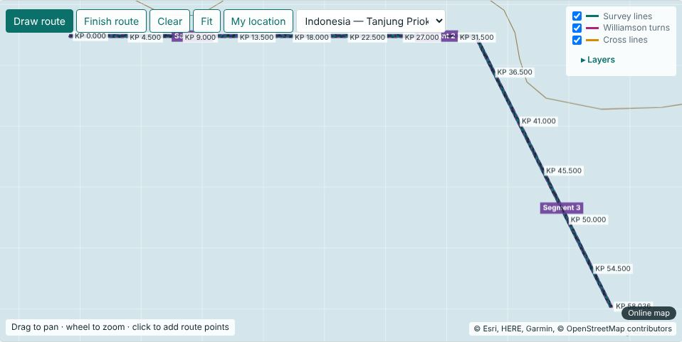
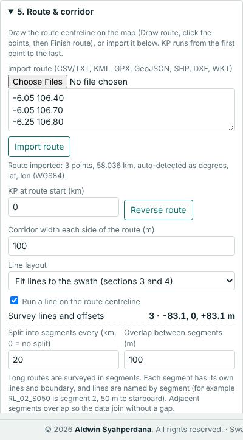
- Route: press Draw route on the map, click the points and Finish route, or import it (CSV/TXT, KML, GPX, GeoJSON, SHP, DXF, WKT). KP runs from the first point to the last; set KP at route start, or Reverse route.
- Corridor width each side of the route.
- Line layout: Fit lines to the swath spaces the lines from the sensor and swath settings to cover the corridor. Fixed offsets uses the offsets you type (starboard positive, port negative,
±25for both sides). Run a line on the route centreline adds the centre line. - Segments: long routes are split every 20 km by default (0 = no split), with a 100 m overlap between neighbouring segments, so the data join without a gap. Each segment has its own lines and boundary, and the line names carry the segment number:
RL_02_S050is segment 2, 50 m to starboard. Between segments the vessel transits. - Line extension (run-in and run-out), cross lines every so many metres of KP and how far they go beyond the corridor, and the name prefixes.
- KP table (CSV) and Route with KP (EIVA RLN) export the route itself.
Line names show side and offset: C = centreline, P = port, S = starboard. Lines are sailed in order across the corridor, turning at the route ends.
8 Lines, turns, IHO order and uncertainty
8.1 Line direction
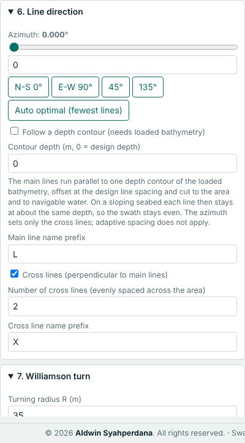
Set the azimuth with the slider, the preset buttons, or Auto optimal (fewest lines). Lines along the depth contours usually give the most even depth along each line, and so the most even swath. Set the main line prefix, and the number and prefix of the cross lines, which run perpendicular across the area for quality control.
Follow a depth contour (needs loaded bathymetry) bends the main lines so they run parallel to one depth contour instead of straight. Load depths first (global bathymetry or your own XYZ soundings), tick the box, and set Contour depth (0 uses the design depth). The lines are offset from that contour at the design line spacing, cut to the area and, with trimming on, to water. The note under the box says which contour is used and how many lines it gives; if the contour does not cross the area, it gives the depth range so you can pick another, and straight lines are used meanwhile. The azimuth then sets only the cross lines, which stay straight. Pick a contour near the shallow side, where the swath is narrowest, so the spacing holds everywhere. Exports write the bent lines as polylines. Drone flights always use straight lines.
8.2 Turns
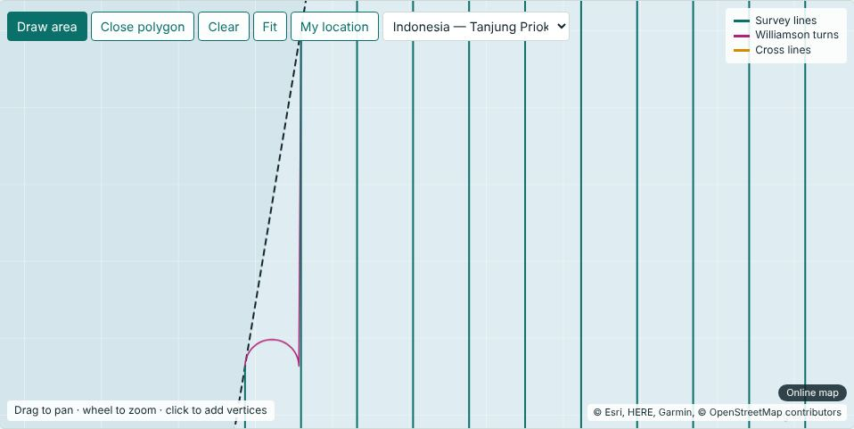
Enter the vessel's real turning radius R. Recommend R from LOA gives a first guess of 2.5 × the vessel length. If the line spacing is smaller than the turning diameter 2R, the planner draws a Williamson-style turn that swings out and comes back on the reciprocal heading. Otherwise it draws a plain U-turn. Reduce speed in turns by 2 kts slows the vessel in the turns for the time estimate.
8.3 IHO S-44 & speed
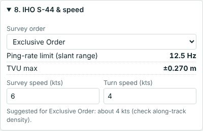
Choose the S-44 order (Exclusive, Special, 1a, 1b, 2). The section shows the ping-rate limit from the slant range and the maximum total vertical uncertainty (TVU) at the design depth. Enter the survey and turn speeds. The results then check overlap, feature detection, and the maximum speed for three pings on the smallest feature of that order.
8.4 Uncertainty budget (a priori TPU)
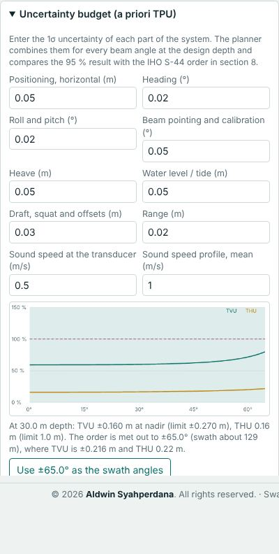
Enter the 1σ uncertainty of each part of the system: positioning, heading, roll and pitch, beam pointing, heave, water level, draft, range and sound speed. The planner combines them for every beam angle at the design depth and plots the 95 % result against the S-44 limits. Use this swath angle sets the swath to the widest angle that still meets the order. It is a simplified a priori model (see the science page): check it against your own uncertainty model before committing to a specification.
9 Depth, map, coastline and project settings
9.1 Global bathymetry and your own soundings
Global bathymetry fetches depths for the closed area from GMRT, NOAA NCEI or EMODnet, at the resolution you choose. You can also load a downloaded GeoTIFF or ESRI ASCII grid. These grids are 100–450 m models of mixed quality, referenced roughly to mean sea level, not chart datum. They are good enough to size a plan, but they miss shoals and wrecks.
Bathymetry from XYZ file loads your own soundings (header lines to skip, positive-down or elevation, metres, feet or fathoms, and a vertical offset for datum or tide). They replace any global data. Show them on the map as points or a shaded background, then apply the shallowest, 5th percentile or mean as the design depth.
9.2 Map background and offline maps
Choose a basemap (Esri street, topographic, grey, satellite and ocean maps, OpenStreetMap, OpenTopoMap), your own PMTiles map file, or a custom tile URL (for example from your own Google or Bing account). The OpenSeaMap overlay adds seamarks. Tiles you view are kept on the device for offline use, so pan and zoom over your area before going offline. Save area downloads a zoom range for a custom tile URL. Without tiles the map shows a grid and the built-in world coastline.
9.3 Coastline and land avoidance
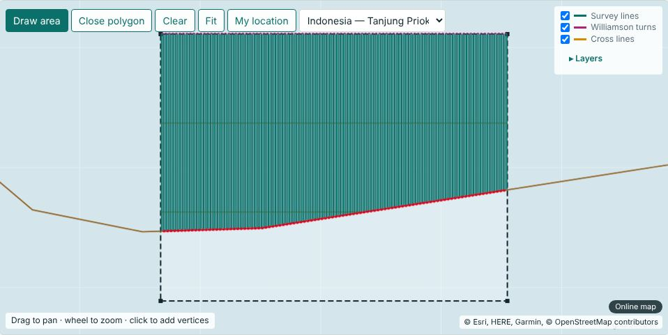
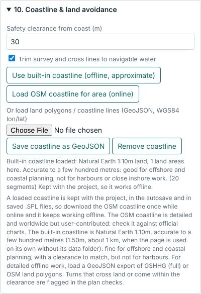
- Use built-in coastline (offline, approximate): Natural Earth 1:10m land, accurate to a few hundred metres. It works anywhere without internet; a page used on its own, without its data folder, falls back to 1:50m (about 1 km). Good for offshore and coastal planning, not for harbours.
- Load OSM coastline for area (online): the detailed OpenStreetMap coastline. Check it against official charts.
- Load land polygons / coastline lines from a GeoJSON file, for example an export of GSHHG (full) or OSM land polygons for detailed offline work.
- Save coastline as GeoJSON and Remove coastline.
Set the safety clearance to match the accuracy of the coastline you use. A loaded coastline is kept with the project, in the autosave and in .SPL files: download the OSM coastline once in the office and it works offline in the field. Turns that cross land or come within the clearance are flagged in the plan checks.
With a coastline loaded, every Williamson turn, U-turn and transit is checked against it. A turn that crosses the coastline, comes closer than the safety clearance, or lies on land is drawn in red on the map, and the first line of the Plan checks says how many turns are affected. Turns at line ends trimmed close to the coast usually bulge onto land: shorten those lines, use a smaller turning radius, or move the boundary away from the coast. Drone flights are not checked. The check uses only the loaded coastline, not shoals, structures or traffic.
9.4 Project & operations
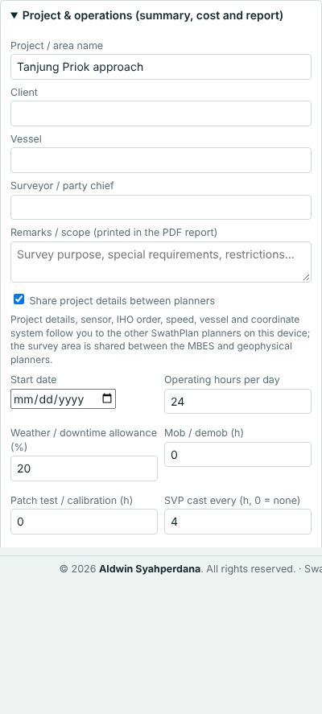
The project details are printed on the map sheet and in the reports. The operations figures drive the time and cost estimate: start date, operating hours per day, weather and downtime allowance, mobilisation and demobilisation, patch test or calibration, SVP casts (interval and duration), and an optional vessel day rate. Ping rate (0 = automatic from the slant range) and Along-track beamwidth feed the ping and footprint figures. Create printable report opens a self-contained HTML report that you can print or save as PDF.
10 Results, checks and comparisons
10.1 Reading the results
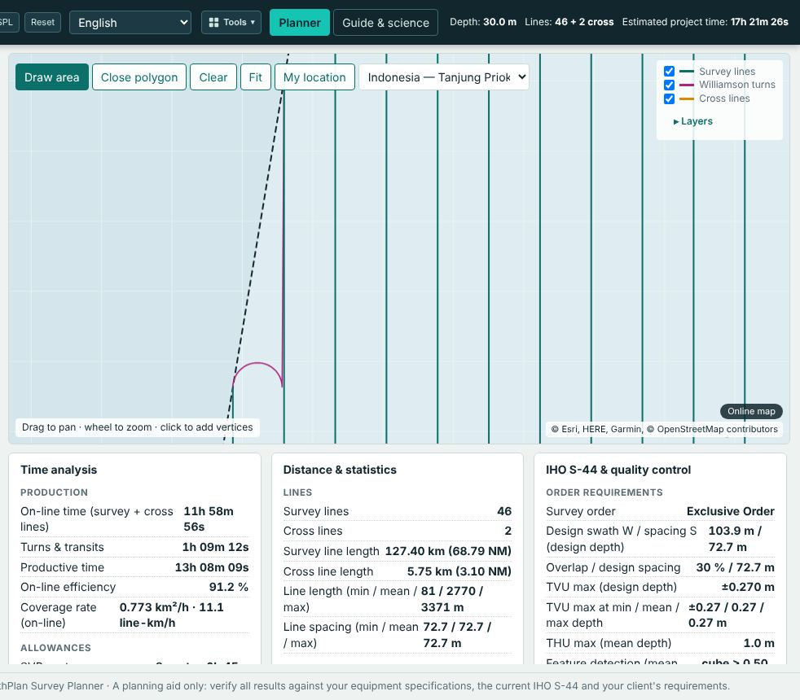
- Time analysis: on-line time (survey and cross lines), turns and transits, productive time, on-line efficiency, coverage rate, then the allowances (SVP, calibration, weather, mobilisation) and the total project time, duration in working days, estimated completion, production per day and the vessel cost.
- Distance & statistics: number and length of lines, line spacing, turns, total distance, area, swath statistics, achieved overlap, line-km per km², land trimming, depth range, and estimated pings and soundings.
- IHO S-44 & quality control: the order's requirements against the plan (TVU, THU, feature detection, full seafloor search), the allowed depth difference at crossings, and the ping and speed figures.
10.2 Plan checks
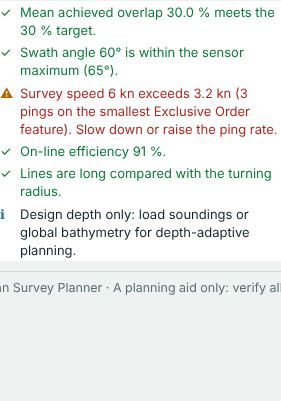
The checks look at the plan as a whole: overlap against the target, swath angle against the sensor, speed against feature detection, line length against the turn time, transits and, for each survey type, its own rules (S-44 coverage for single-beam, height and photo interval for drones). Fix the ⚠ items and the list updates.
10.3 Comparing scenarios for a tender
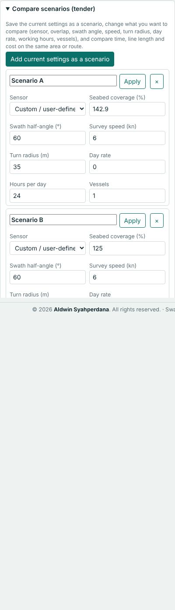
Press Add current settings as a scenario, change what you want to compare (sensor, overlap, swath angle, speed, turn radius, day rate, working hours, number of vessels), add again, and compare time, line length and cost on the same geometry. Export comparison (CSV) saves the table for your bid.
11 Project files (.SPL)
Save .SPL writes a plain-text project file: the boundary or route, every setting, and the coastline you loaded. It first asks for the file name; the default is the project name, or survey_plan when there is none. Open .SPL reads it back. The format is designed to stay compatible:
- Files from older versions open in newer ones. Settings that did not exist yet get their default values.
- Files from newer versions open in older ones; what the older version does not know is skipped.
Use .SPL files to move a project between computers, keep versions, or send a plan to a colleague.
12 Exporting
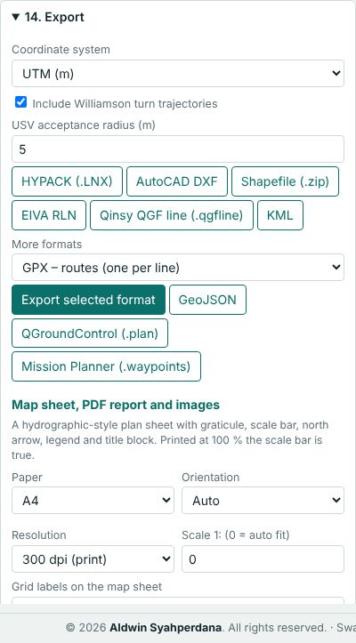
First choose the coordinate system for the exported coordinates: UTM, WGS 84 degrees, or the EPSG/custom system you loaded. Tick Include Williamson turn trajectories if your software should get the turns too. USV acceptance radius goes into the waypoint files.
| Format | For | Contents and notes |
|---|---|---|
| HYPACK (.LNX) | HYPACK | Planned lines. The layout has not been verified in HYPACK yet: test-import before field use. |
| AutoCAD DXF | CAD, GIS, Qinsy | Survey lines (cyan), cross lines (orange), turns (red, each turn one polyline) and the boundary (white), each on its own layer and colour. Split corridors: each segment border as a purple closed polyline on layer segments with its name and KP range, the lines on layers per segment, and a named view per segment. |
| Shapefile (.zip) | GIS | Lines, boundary and corridor segments, with .prj. |
| EIVA RLN | EIVA NaviPac / Helmsman | Runlines with E, N and KP. |
| Qinsy QGF line (.qgfline) | Qinsy | Straight lines in WGS 84 UTM. Rebuilt from a sample file: test-import first. |
| KML | Google Earth, GIS | Lines, boundary and segments, WGS 84. |
| GeoJSON | GIS, web maps | Lines, boundary and segments with their names and KP, WGS 84. |
| QGroundControl (.plan), Mission Planner (.waypoints) | Autopilots: USVs and drones | Waypoints along the lines (and turns). Drone plans add the height and, for a camera, the trigger distance. |
| More formats | Various | GPX (routes, single route, tracks, waypoints), CSV (line list, vertices), TXT (vertices, start/end, waypoint list in degrees and minutes), WKT, GML 2, MapInfo MIF/MID, HYPACK LNW, NMEA 0183 waypoints. GPX, KML, GML and NMEA are always WGS 84. |
12.1 Map sheet, PDF report and images
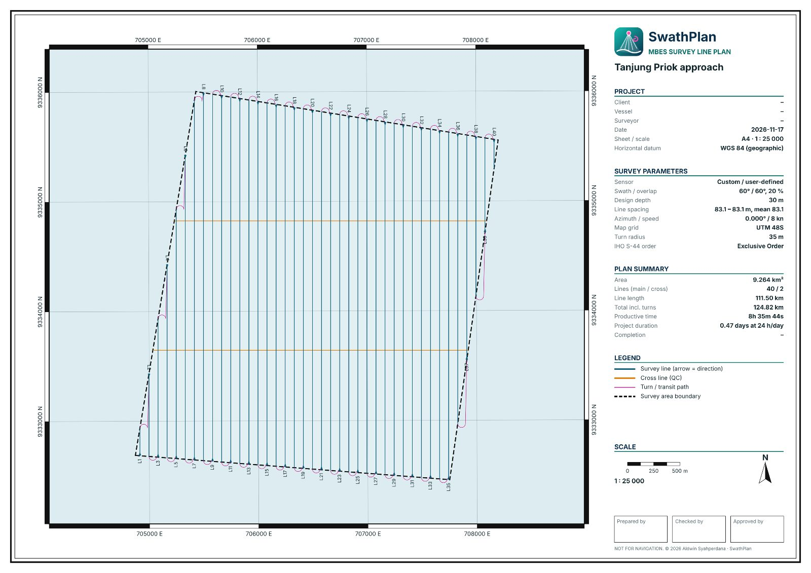
Choose the paper (A4 or A3), orientation, resolution and scale (0 = fit automatically), the grid labels (projected, latitude/longitude, or both), and whether to include the basemap (needs internet), the soundings, and the line names and arrows. Printed at 100 %, the scale bar is true.
- PDF report: the map sheet followed by the statistics pages.
- Map image: the sheet as PNG, JPEG, WebP, TIFF, BMP, SVG (vector, without basemap) or PDF. Georeferenced versions of the map frame are also available: GeoTIFF, or PNG/JPEG with a world file and .prj.
12.2 Long routes in segments
For a corridor split into segments, Long routes in segments sets how every export handles them:
- One sheet per segment, plus an overview (default): PDFs get a page per segment, images one per sheet in a zip, DXF one file with layers and views per segment, other formats one file for the whole route.
- One file per segment, for every format: each format is saved once per segment with only that segment's lines, outline and statistics, all in one zip. Map sheets and reports also get an overview.
- The whole route on one sheet: one file, one sheet.
13 The infill planner
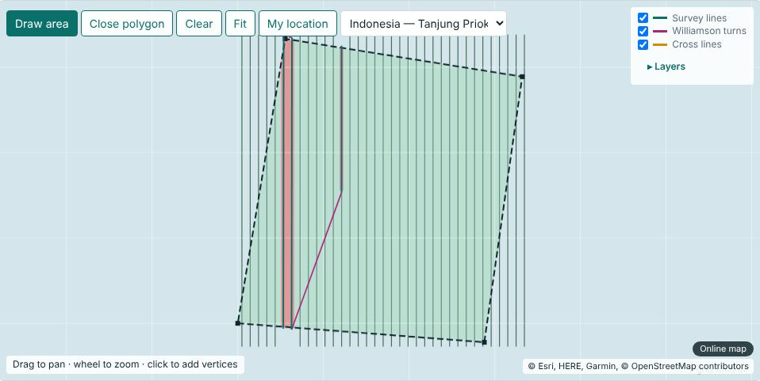
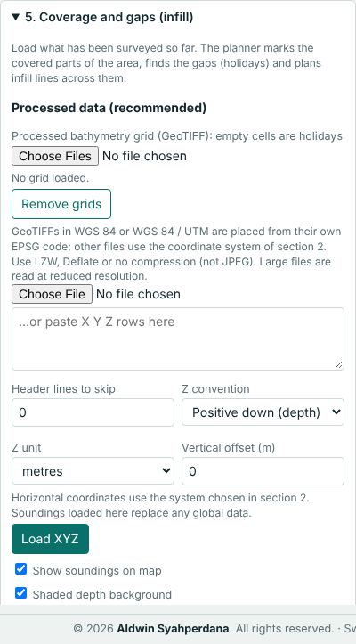
The infill planner uses the same map, area, sensor, turn and export sections as the survey planner. In Survey data, choose what was surveyed: multibeam bathymetry or side-scan sonar. Then load what you have:
- Processed data (recommended): a processed bathymetry grid (GeoTIFF), where empty cells are holidays, or a side-scan mosaic (GeoTIFF), where empty pixels are gaps. Tick whether black or white pixels mean empty. GeoTIFFs in WGS 84 or WGS 84 / UTM are placed from their own EPSG code; others use the coordinate system section. Use LZW, Deflate or no compression (not JPEG). You can also count loaded XYZ soundings as covered.
- Track lines (before processing): the vessel or towfish positions. The covered strip is computed from the depth and swath angles (or a fixed width). For side-scan it runs from the nadir gap to the range on each side, and at 200 % every point must be seen twice (points seen once show in yellow). Use the coverage extent as the area draws the boundary from the data.
Then set the grid cell, the smallest gap worth infilling, the line extension and the direction (Same direction as the tracks). The planner reports the coverage of the area and the gaps, plans infill lines spaced for the chosen coverage, and exports the gaps as CSV and the lines in every format.
With a survey boundary drawn or imported, every part of it that the loaded data does not cover is a gap: holes between tracks as well as the strips still missing along the boundary. To be safe at the edges, set Also cover outside the boundary (m), for example to half a swath. A margin of that width outside the boundary then counts as area to cover. The margin strip along each boundary edge gets infill lines parallel to that edge, and gaps inside the area keep the chosen line direction. The coverage percentage is still that of the area itself. An infill line runs only where its strip has gaps, so it never crosses ground that is already covered; it is split into several lines where needed.
14 Troubleshooting
| Problem | What to do |
|---|---|
| The page looks old after an update | The offline copy is still active: press the update banner, or reload the page twice. |
| No map, only a grid | No internet, or the basemap blocks pages opened from a file. Choose another basemap, load a PMTiles file, or use the grid and built-in coastline. |
| Imported boundary lands in the wrong place | Set the coordinate system (and X/Y order) before importing DXF, WKT or text. |
| No lines appear | The area must be closed. Check the depth (above zero) and the swath angles. |
| Global bathymetry does not load | The service needs internet and may be blocked. Use the link shown to download the grid, then load it as GeoTIFF or ASCII. |
| Lines cut too much or not enough at the coast | Check which coastline is loaded and match the safety clearance to its accuracy. |
| Acquisition software rejects a file | Check the export coordinate system. The LNX and LNW layouts have not been verified in HYPACK yet, and the Qinsy file is rebuilt from a single sample: test-import before field use. |
15 Limitations
- Contour-following lines use one contour and the design spacing; adaptive spacing does not apply to them.
- Swath and footprint assume a flat seabed at the depth under the line; refraction and beam-angle limits are only those you enter.
- Time estimates assume constant speeds and ignore currents, traffic and port calls.
- Catalogue values not marked as checked are approximate; checked ones follow the maker's datasheet, which your system's configuration may differ from.
- Turns are checked only against the loaded coastline, not against shoals, structures or traffic.
- Coastlines and global bathymetry are not navigation data.
The formulas behind every number, and the standards and papers they come from, are on the Science & references page.
© 2026 Aldwin Syahperdana.